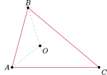
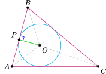
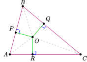
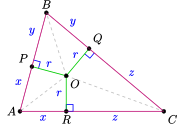
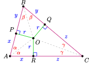

Section 1 Introduction
This first activity could go with chapter 1 or 2.
Activity 1.1. Part I: The circle inscribed in a triangle.
Materials: You will need paper and pencil, a ruler, compass, and protractor, or a dynamic geometry program such as Geogebra.
-
The vertices of a triangle determine a unique inscribed circle.
Draw a large acute triangle and label the vertices \(A\) , \(B\text{,}\) and \(C\text{.}\)
Draw the angle bisector of the angle \(\angle{ABC}\text{.}\) You can use a compass and rule, or use your ruler and protractor.
Draw the angle bisector of the angle \(\angle{CAB}\text{.}\) Label the point where the two angle bisectors meet with the letter \(O\text{.}\)
From geometry, we know that every point on the angle bisector of \(\angle XYZ\) is equidistant between segments \(\overline{YX}\) and \(\overline{YZ}\text{.}\) (The distance from a point to a line is the length of the perpendicular segment joining the point to the line.) Use this fact to explain why the point \(O\) is the same distance to each side of your triangle. Notice that the segment \(\overline{OC}\) bisects \(\angle ACB\text{.}\)
Draw a line segment from \(O\) to \(\overline{AB}\) that is perpendicular to \(\overline{AB}\text{.}\) Label the point of intersection as \(P\text{.}\) You can use a compass and ruler, or use your ruler and protractor.
Using the point at \(O\) as the center, draw the circle that passes through \(P\text{.}\) The circle is called the inscribed circle of the triangle. The inscribed circle should be tangent to \(\overline{AB}\) at \(P\text{,}\) tangent to \(\overline{BC}\) at a point \(Q\text{,}\) and tangent to \(\overline{AC}\) at a point \(R\text{.}\)

-
We divide \(\Delta ABC\) into six smaller triangles.
Draw the segment \(\overline{OP}\text{.}\) This is a radius of the inscribed circle, and is perpendicular to \(\overline{AB}\text{.}\) Draw the other two radii that connect \(O\) to the points of tangency at \(Q\) and \(R\text{.}\)
At this point, if your drawing is too cluttered, you may need to make a fresh copy of the triangle \(\Delta ABC\text{,}\) the points of tangency \(P\text{,}\) \(Q\text{,}\) and \(R\text{,}\) and the center of the circle \(O\) (but do not include the circle in this drawing).
Connect \(O\) to each of the other labeled points. The triangle \(\Delta ABC\) has been cut into 6 right triangles. Each of the six triangles has one side which is a radius of the inscribed circle. Label the lengths of the three radi with the common value \(r\text{.}\)
-
Each of those six triangles can be paired with another that shares one side and is congruent: \(\Delta AOP\) and \(\Delta AOR\text{;}\) \(\Delta BOP\) and \(\Delta BOQ\text{;}\) \(\Delta COQ\) and \(COR\text{.}\)
Label the common lengths \(AP\) and \(AR\) with \(x\text{.}\)
Label the common lengths \(BP\) and \(BQ\) with \(y\text{.}\)
Label the common lengths \(CQ\) and \(CR\) with \(z\text{.}\)

-
What is the length of the radius of the inscribed circle?
-
Write the area of \(\Delta ABC\) as the sum of the areas of the six triangles in terms of \(r\text{,}\) \(x\text{,}\) \(y\text{,}\) and \(z\text{.}\)
Combine like terms, then factor out the greatest common factor of the terms.
Write the perimeter of \(\Delta ABC\) in terms of \(x\text{,}\) \(y\text{,}\) and \(z\text{.}\) (Can you see why the sum of \(x\text{,}\) \(y\text{,}\) and \(z\) is called the semiperimeter?)
Show that the radius of the inscribed circle is the area of the triangle divided by its semiperimeter.
-
The second activity would go with chapter 8
Activity 1.2. Part II: Heron's formula.
Materials: You will need paper and pencil, a ruler, compass, and protractor, or a dynamic geometry program such as Geogebra.
Make a new copy of the diagram you used for Activity part I ( Activity 1.1).
Label the two congruent angles at \(A\) by \(\alpha\text{,}\) the two angles at \(B\) by \(\beta\text{,}\) and the two angles at \(C\) by \(\gamma\text{.}\)
-
Use the fact that the sum of the angles of \(\Delta ABC\) is \(180\degree\) to write an equation involving \(\alpha\text{,}\) \(\beta\text{,}\) and \(\gamma\text{.}\)
Solve the equation for \(\alpha\)
\begin{equation*} \alpha = \underline{\qquad\qquad\qquad} \end{equation*}so
\begin{equation*} \tan\alpha = \tan(\qquad\qquad\qquad) \end{equation*} -
Use the difference of angles identities for the sine and cosine functions and the fact that \(\tan\theta = \dfrac{\sin\theta}{\cos\theta}\) to rewrite the right side of your last equation in terms of \(\tan(\beta+\gamma)\)
\begin{equation*} \tan\alpha = \hphantom{WWWWWWWWWWWWW} \end{equation*}Hint: Use \(\theta = 90\degree -(\beta+\gamma)\text{.}\)
-
Next use the sum of angles identity for the tangent function to rewrite the right side of your last equation in terms of \(\tan\beta\) and \(\tan\gamma\)
\begin{equation*} \tan\alpha = \hphantom{WWWWWWWWWWWWW} \end{equation*} -
Explain how your last equation imples that
\begin{equation*} \tan\alpha\tan\beta+\tan\alpha\tan\gamma+\tan\beta\tan\gamma =1 \end{equation*} -
Using the diagram above, rewrite the last equation in terms of \(r\text{,}\) \(x\text{,}\) \(y\text{,}\) and \(z\)
Factor \(r^2\) from the left side of the equation, then multiply both sides by \(xyz\)
-
Let \(A\) be the area of \(\Delta ABC\text{,}\) and let \(s=x+y+z\) be the semiperimeter. Explain why
\begin{equation*} r^2 s = xyz \end{equation*} -
Using the final result of Activity part I ( Activity 1.1), explain why
\begin{equation*} A = rs \end{equation*} -
Using the last two equations, explain why
\begin{equation*} A^2=s(xyz) \end{equation*} Referring again to the diagram above, verify that the length of the sides of \(\Delta ABC\) are \(a=y+z\text{,}\) \(b=x+z\text{,}\) and \(c=x+y\)
Compute \((s-a)\text{,}\) \((s-b)\text{,}\) and \((s-c)\text{.}\)
-
You have proven Heron's formula.
Heron's formula.
Suppose that \(\Delta ABC\) has sides of length \(a\text{,}\) \(b\text{,}\) and \(c\text{.}\) Then the area of \(\Delta ABC\) is given by
\begin{equation*} A=\sqrt{s(s-a)(s-b)(s-c)} \end{equation*}where \(s=\dfrac{a+b+c}{2}\) is the semiperimeter.